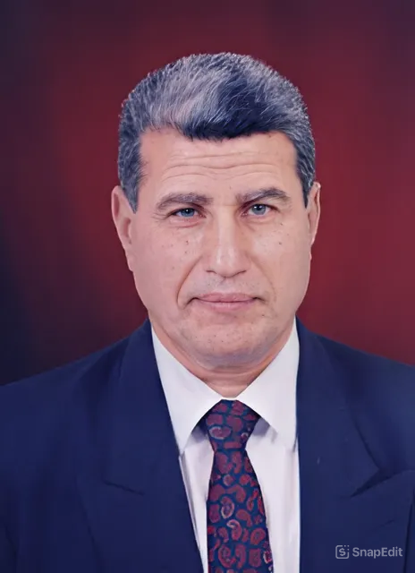

أستاذ علم المكتبات والمعلومات – كلية الآداب، جامعة القاهرة
وكيل كلية الآداب الأسبق لشؤون خدمة المجتمع وتنمية البيئة
📍 النشأة والتعليم
- وُلد الدكتور محمد فتحي عبد الهادي عام 1943 بمحافظة الشرقية، مصر. التحق بكلية الآداب – جامعة القاهرة.
- حصل علي ليسانس الآداب في المكتبات والوثائق عام 1964.
- حصل علي ماجستير في علم المكتبات والمعلومات عام 1971.
- دكتوراه في نفس التخصص عام 1975، وكانت أطروحته من أوائل الدراسات التي تناولت النظم الآلية في خدمات المكتبات المصرية
🧑🏫 المسيرة الأكاديمية والمهنية
- رئيس قسم المكتبات والوثائق بجامعة القاهرة (1986–1990).
- أستاذ ورئيس قسم المكتبات والوثائق بجامعة السلطان قابوس، سلطنة عمان (1991–1995).
- مدير مركز بحوث نظم وخدمات المعلومات بجامعة القاهرة (1996–2002).
- وكيل كلية الآداب لشؤون خدمة المجتمع وتنمية البيئة بجامعة القاهرة (1998–2004).
بدأ الدكتور عبد الهادي مسيرته الأكاديمية كمعيد بقسم المكتبات والوثائق بجامعة القاهرة عام 1964، وتدرج في المناصب الأكاديمية حتى حصل على درجة الأستاذية عام 1986. شغل عدة مناصب بارزة، منها:
📚 الإنتاج العلمي
يُعد الدكتور عبد الهادي من أبرز الباحثين في مجال المكتبات والمعلومات، حيث بلغ إنتاجه العلمي حتى نهاية عام 1998 حوالي 218 عملاً، تنوعت بين:
- كتب مرجعية في الفهرسة والتصنيف.
- مقالات بحثية في مجلات علمية محكمة.
- مشاركات في مؤتمرات دولية.
- إشراف على العديد من رسائل الماجستير والدكتوراه.
من أبرز مؤلفاته:
- "علم المعلومات والتكامل المعرفي" (ترجمة مشتركة).
- "المكتبات والمعلومات العربية بين الواقع والمستقبل".
- "عميد المكتبيين العرب: السيد محمود الشنيطي".
🌍 المشاركات والعضويات
رئيس تحرير عدة مجلات متخصصة، منها:
- مجلة المكتبات والمعلومات العربية (1987).
- مجلة الاتجاهات الحديثة في المكتبات والمعلومات (1991).
- مجلة الفهرست الصادرة عن دار الكتب القومية بمصر (2003) .
- مجلة العربية 3000 (2005).
عضو في العديد من اللجان والمجالس، منها:
- المجلس الأعلى لدار الكتب والوثائق القومية.
- لجنة المعلومات باللجنة الوطنية المصرية للتربية والعلوم والثقافة.
- مجلس البحوث الاجتماعية بأكاديمية البحث العلمي والتكنولوجيا.
- لجنة المكتبات بصندوق التنمية الثقافية بوزارة الثقافة.
🏅 الجوائز والتكريم
- جائزة الدولة للتفوق في العلوم الاجتماعية.
- جائزة جامعة القاهرة للتميز.
- تكريمات متعددة من مؤسسات أكاديمية وثقافية داخل مصر وخارجها.
روابط إضافية
رابط 1رابط 2